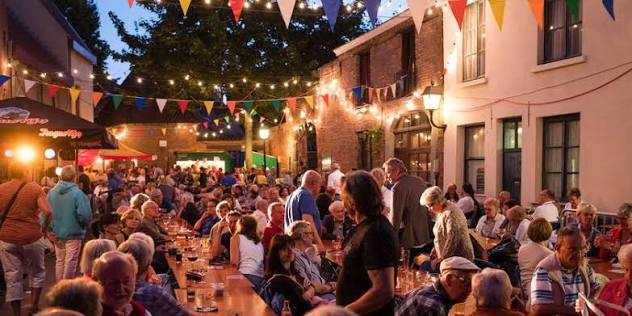
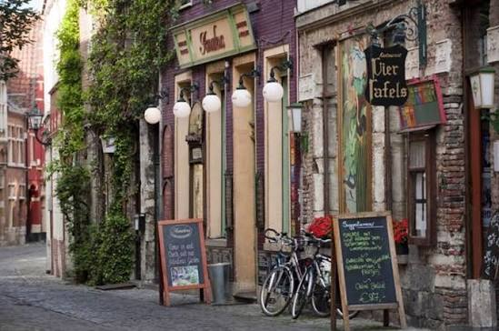
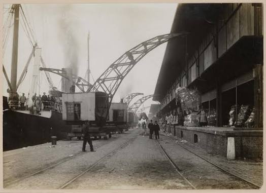

CityLoop Quest Gand


Le cœur historique concentre les images les plus célèbres : Korenmarkt, Graslei, Beffroi et Gravensteen. Pourtant, son ambiance change d’une rue à l’autre. Autour de la Veldstraat, le commerce domine ; près du Patershol, les ruelles serrées et maisons basses évoquent un quartier artisanal devenu gourmand. La Vrijdagmarkt garde l’échelle d’une grande place politique, tandis que Portus Ganda ouvre brusquement la perspective sur l’eau.

Le quartier étudiant s’étend autour de Sint-Pietersnieuwstraat, de la Blandijnberg et de la place Saint-Pierre. Université, bibliothèques, cafés, théâtres et logements créent une activité presque permanente. La Tour des Livres d’Henry van de Velde sert de repère vertical. Ici, les façades monumentales du XIXe siècle côtoient affiches de concerts, vélos et files devant les friteries. L’énergie vient moins du tourisme que du rythme académique.
Au nord, le Rabot et les anciens quartiers industriels racontent une Gand plus populaire. Canaux, logements ouvriers, nouvelles résidences et bâtiments d’usine reconvertis se mélangent. Le Musée Dr. Guislain se trouve à la lisière de cette zone. Plus loin, les docks du Oude Dokken ont été transformés en quartier résidentiel et culturel, avec passerelles, espaces publics et réutilisation de structures portuaires.

À l’est, Macharius-Heirnis conserve les ruines de l’abbaye Saint-Bavon, des maisons du XIXe siècle et la proximité de la confluence. Ledeberg et Gentbrugge, au sud-est, possèdent leurs propres marchés, parcs et rues commerçantes. Ils rappellent que Gand ne se réduit pas à son centre classé. À l’ouest, Brugse Poort et Malem montrent d’autres histoires d’urbanisation, d’immigration et de rénovation.
Le Citadelpark forme un monde à part avec ses musées, ses arbres, ses vestiges de l’Exposition de 1913 et la proximité de la gare Sint-Pieters. Sint-Amandsberg, de l’autre côté de la voie ferrée, abrite un grand béguinage et des quartiers résidentiels variés. La meilleure manière de sentir ces ambiances consiste à changer de vitesse : marcher dans le centre, prendre un tram vers un faubourg, puis revenir à vélo le long de l’eau. Les transitions font partie du portrait.
À l’est, Ledeberg et Gentbrugge racontent une ville de petites maisons, d’anciens ateliers et de marchés de proximité. Les voies ferrées et les grands axes ont longtemps découpé ces secteurs, mais les berges de l’Escaut et les Gentbrugse Meersen offrent aujourd’hui de vastes respirations. Les cafés de quartier, les commerces issus de migrations successives et les nouveaux projets de logement composent un paysage moins monumental que le centre, mais précieux pour comprendre la diversité sociale de Gand.
Au nord, la Muide et les docks vivent une mutation spectaculaire. Là où dominaient bassins, hangars et activités portuaires, de nouveaux logements et promenades apparaissent autour de l’Oude Dokken. Les traces industrielles n’ont pas entièrement disparu : grues, quais et entrepôts rappellent la vocation maritime. Cette transformation soulève aussi des questions de prix du logement et de coexistence entre anciens habitants et nouveaux arrivants. Une promenade attentive permet de lire ces tensions dans les matériaux : brique réparée, béton brut, passerelles neuves, jardins temporaires et façades de logements contemporains.
Enfin, les quartiers ne s’arrêtent jamais à une étiquette. Le Patershol n’est pas uniquement gastronomique, le Rabot ne se résume pas à son histoire ouvrière et les docks ne sont pas seulement un chantier contemporain. Écoles, associations, mosquées, ateliers, jardins collectifs et commerces familiaux fabriquent des usages moins visibles que les monuments. Prendre un tram quelques arrêts au-delà du centre, puis revenir à pied, suffit souvent pour sentir comment la ville touristique s’inscrit dans une agglomération réellement habitée. Les marchés du week-end, les terrasses d’étudiants et les pistes cyclables révèlent aussi des horaires différents selon les secteurs. Gand change de voix entre le matin résidentiel, l’après-midi commerçant et la soirée culturelle ; revenir dans un même quartier à deux moments suffit à en modifier complètement la perception.